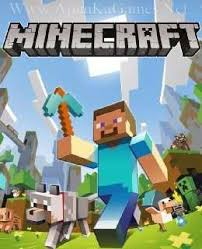
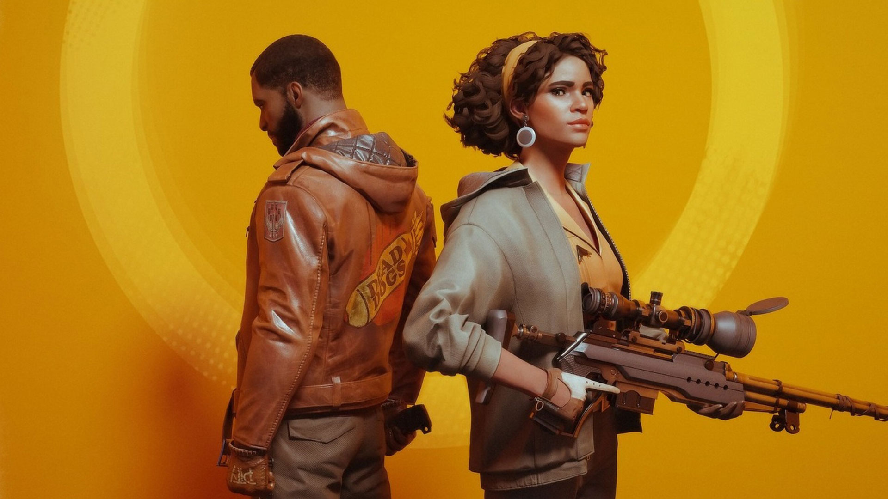
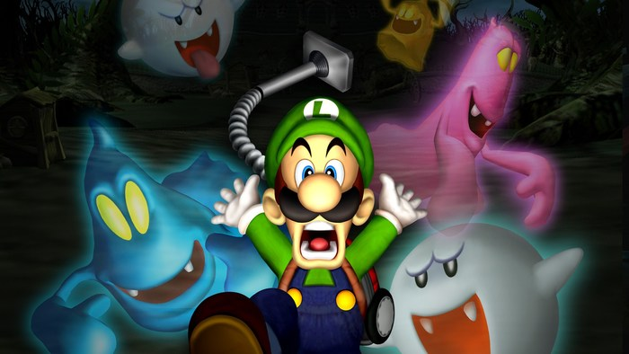
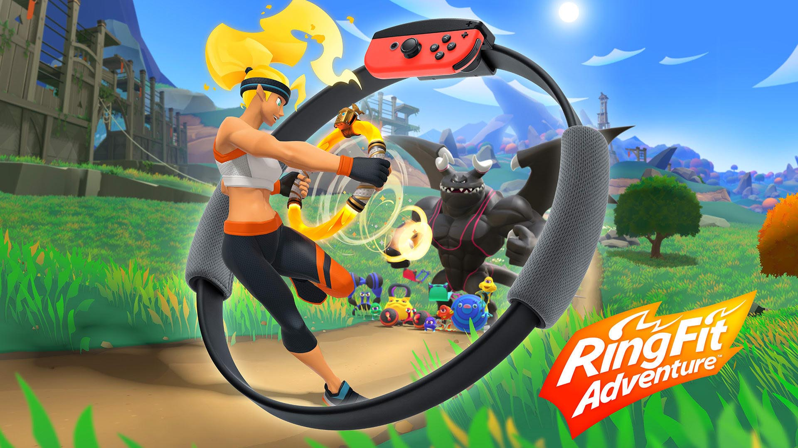
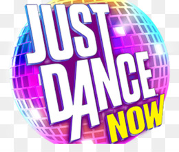
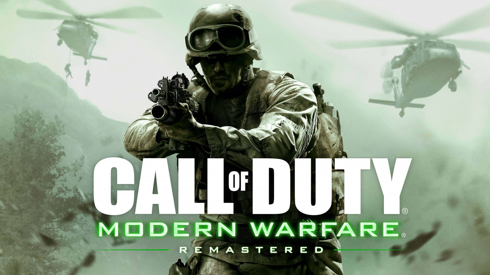
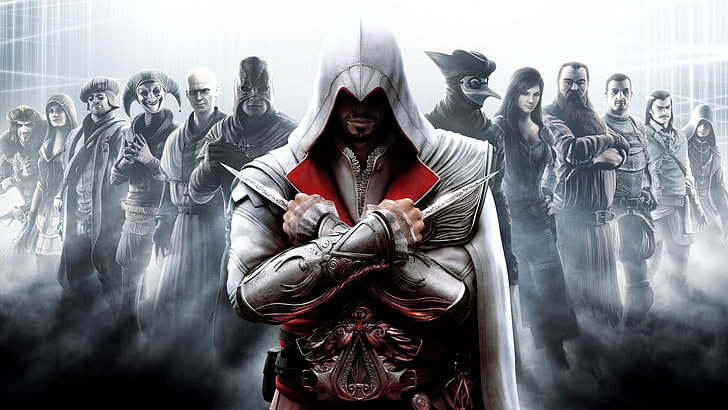

Hi , I'm Roi.
At the end of the 80s, I received a birthday present a TV game called ATARI, from the first moment I fell in love with this magical thing.
I would sit for hours and play, play alone, play with my brothers, play with friends... the main thing is to play!
During the '90s the games developed and newer consoles started arriving such as Sega, Nintendo, Megason, and the PlayStation1.
I saved money and waited for a new game or a new console to arrive and immediately bought it.
In the 2000s, the PlayStation 2,3 and the Xbox arrived and as of today, there are already the Nintendo Switch, PlayStation 5, Xbox One, and more... The new games are crazy!! The graphics and speed have improved and there is a story behind each game.
During my life, my passion for games decreased and I didn't even have time to play... I got married, had children, and neglected the consoles.
Then, on my oldest son's 7th birthday, I brought him the Sony 3 as a gift and I immediately saw the sparkle in his eyes when he played Call of Duty for the first time. It's the same sparkle I had back then in the 80s with the ATARI.
Today, after 3 years I can say that I live the games through my child. So after all this come and let me recommend to you some of the best games we've played...
accept Roi's recommendations!!!
Roi's favorite Games
-










-

-

-

God of War Ragnarök
God of War Ragnarök is an upcoming action-adventure game developed by Santa Monica Studio and will be published by Sony Interactive Entertainment (SIE).
It is scheduled to be released worldwide on November 9, 2022, for the PlayStation 4 (PS4) and PlayStation 5 (PS5).
It will be the ninth installment in the God of War series, the ninth chronologically, and the sequel to 2018's God of War. Loosely based on Norse mythology, the game will be set in ancient Scandinavia and feature series protagonists Kratos and his teenage son Atreus.
Serving as the finale to the Norse era of the series, the game will cover Ragnarök, a series of events that bring about the end of days, and depicts the deaths of some of the Norse gods, which was foretold to happen in the previous game after Kratos killed the Æsir god Baldur.
Minecraft
Minecraft is a sandbox video game developed by Mojang Studios. The game was created by Markus "Notch" Persson in the Java programming language.
Following several early private testing versions, it was first made public in May 2009 before being fully released in November 2011, with Notch stepping down and Jens "Jeb" Bergensten taking over development. Minecraft has since been ported to several other platforms and is the best-selling video game of all time, with over 238 million copies sold and nearly 140 million monthly active users as of 2021.
GTA V 5
Grand Theft Auto V is a 2013 action-adventure game developed by Rockstar North and published by Rockstar Games. It is the seventh main entry in the Grand Theft Auto series, following 2008's Grand Theft Auto IV, and the fifteenth instalment overall.
Set within the fictional state of San Andreas, based on Southern California, the single-player story follows three protagonists—retired bank robber Michael De Santa, street gangster Franklin Clinton, and drug dealer and gunrunner Trevor Philips—and their attempts to commit heists while under pressure from a corrupt government agency and powerful criminals.
The open world design lets players freely roam San Andreas' open countryside and the fictional city of Los Santos, based on Los Angeles.
The game is played from either a third-person or first-person perspective, and its world is navigated on foot and by vehicle.
``q Players control the three lead protagonists throughout single-player and switch among them, both during and outside missions. The story is centred on the heist sequences, and many missions involve shooting and driving gameplay. A "wanted" system governs the aggression of law enforcement response to players who commit crimes. Grand Theft Auto Online, the game's online multiplayer mode, lets up to 30 players engage in a variety of different cooperative and competitive game modes.
Top best Games for PlayStation
Horizon Forbidden
Horizon Forbidden West is a 2022 action role-playing game developed by Guerrilla Games and published by Sony Interactive Entertainment.
A sequel to 2017's Horizon Zero Dawn, the game is set in a post-apocalyptic version of the Western United States recovering from the aftermath of an extinction event caused by a rogue robot swarm.
The player can explore the open world and complete quests using ranged and melee weapons against hostile machine creatures.
Horizon Forbidden West was released on February 18, 2022, for PlayStation 4 and PlayStation 5, and received generally favorable reviews.
DEATHLOOP
Arkane's latest is another triumph, with Deathloop offering up a murderous puzzle box for players to break open and figure out.
Launching as a timed PS5 exclusive, Deathloop is one of those rare games that surprises you, playing out nothing like any of us expected.
Lose yourself trying to figure out the mystery of how to kill eight targets in a single day, where all move around the world of Black Reef living their lives - and rudely not just staying put so you can kill them. The more you play and experience the loop, the more you learn, and the more you understand about this strange little time-looping world.
Assassin's Creed Valhalla
The historical murder series is back with a bang with Assassin's Creed Valhalla, putting your in the fur-lined shoes of Viking clan leader Eivor.
Build a new settlement in ye olde England, bring down kings to forge alliances, and travel with your longship crew to plunder the towns and monasteries of Mercia.
This will stand as one of the great entries in the Assassin's Creed series, thanks to complicated hero Eivor, the brutal combat, and the wealth of customisation options that cover everything from your fighting style to your face tattoo.
There's rarely been a better match for the universe's lore than the Viking legends either, so you can expect some very interesting tangents as you explore the mysteries of Anglo Saxon England, try to appease the pagan gods, and go on special dream quests. There's a reason the world has been obsessed with Vikings since they first went pillaging, and Valhalla only makes us love them more.
Guardians of the Galaxy -
We didn't think it was possible for Eidos Montreal to do its own take on the infamous Marvel space pirates, but with Marvel's Guardians of the Galaxy it has done just that.
You play as Star-Lord, who is leading an early version of the Guardians, just a few years into the crew's life together.
In this version, they've all just survived an intergalactic war, with Groot, Rocket, Gamora, and Draxx all coming with their own tales of loss and woe, with almost alt-history backstories.
At its heart, this single-player adventure is about learning to operate as a team, both in exploration and combat, and realising that friends can be just as close as family.
Top best Games for Nintendo Switch
Luigi's Mansion 3
Luigi's Mansion 3[a] is a 2019 action-adventure video game developed by Next Level Games and published by Nintendo for the Nintendo Switch.
It is the third main installment in the Luigi's Mansion series following Luigi's Mansion: Dark Moon. The game sees players taking on the role of Luigi who must explore a haunted hotel, incorporating different themes on each floor, and rescue his friends from the ghosts that inhabit it, after the group is tricked into visiting it for a vacation by King Boo.
Alongside a number of returning gameplay elements from the previous installments, the game incorporates new features, including additional moves for ghost catching, an ectoplasmic doppelgänger assistant known as Gooigi, and expanded multiplayer functionality that allows for players to engage in cooperative and competitive gaming both locally and online.
The game received positive reviews from critics and was nominated for several awards, winning the award for "Best Family Game" at The Game Awards 2019.
The game has sold 11.43 million copies as of March 31, 2022.
ring fit-adventure
ring fit-adventure[b] is an exercising action role-playing game developed and published by Nintendo for the Nintendo Switch.
The game comes with two physical components: the Ring-Con, a Pilates ring that the user holds and one Joy-Con slots into, and a Leg Strap, a piece of fabric affixed to the user's leg that holds the other Joy-Con.
The game's main mode has the player complete a turn-based role-playing game, where player movements and battle actions are based on performing certain physical activities using the Ring-Con and Leg Strap, with the motion controls within the Joy-Con sensing the player's movement, and a strain sensor in the Ring-Con detecting bending of that accessory.
Other modes include general guided fitness routines and party-style games.
These activities are centered around common fitness exercises, making the game part of Nintendo's "quality of life" goals in line with a similar game of theirs, Wii Fit.
The game was released worldwide on October 18, 2019, and received generally positive reviews from critics. As of March 31, 2022; the game has sold over 14.09 million copies worldwide, making it one of the best-selling games on the system.
Demand for the game increased drastically during 2020, largely due to the COVID-19 pandemic and related closures of gyms and other exercise facilities, causing shortages in many countries. This led to resellers in America selling the game for over $300, up from its retail price of $80.[1]
Just Dance
Just Dance 2020 is a 2019 dance rhythm game developed and published by Ubisoft. It was unveiled on June 10, 2019, during its E3 press conference as the eleventh main installment of the series,[1] in celebration of the Just Dance series' 10th anniversary, and released on November 5, 2019 for Nintendo Switch, Wii, PlayStation 4, Xbox One and Stadia.[2][3] It was also the first game in the series to be released on Stadia.
The game was exclusively released on the Nintendo Switch in Japan on March 12, 2020,[4] and in China on December 24, 2020.[5]
Just Dance 2020 was the final Wii video game released physically in North America.
It was reported in 2020 that Nintendo of America was no longer able to physically distribute Wii video games in that region because some of its departments no longer had the ability to retrieve necessary equipment to do so.[6] Consequently, this was the final video game in the main Just Dance series released on the Wii console, the platform where the series made its debut in 2009.
By extension, this was the final Wii video game to be published by Ubisoft, the final Just Dance game to be released on a seventh-generation console, and the final Just Dance game to be available on a Nintendo optical disc.
A sequel, Just Dance 2021 was released for all eighth-generation consoles and Stadia on November 12, 2020, and for all ninth-generation consoles on November 24, 2020.
Top best Games for X-box
[Metacritic's 2008 Xbox 360 Game of the Year; Also known as "GTA IV"] What does the American Dream mean today? For Niko Belic, fresh off the boat from Europe.
It's the hope he can escape his past. For his cousin, Roman, it is the vision that together they can find fortune in Liberty City, gateway to the land of opportunity.
As they slip into debt and are dragged into a criminal underworld by a series of shysters, thieves and sociopaths, they discover that the reality is very different from the dream in a city that worships money and status, and is heaven for those who have them an a living nightmare for those who don't. [Rockstar Games]
As Call of Duty 4: Modern Warfare's single player campaign unfolds, the player is introduced to new gameplay at every turn – one moment you are fast-roping from your Black Hawk helicopter after storming into the war zone with an armada of choppers, the next you are a sniper, under concealment, in a Ghillie suit miles behind enemy lines, the next you are engaging hostiles from an AC-130 gunship thousands of feet above the battlefield.
Mixed with explosive action, Call of Duty 4: Modern Warfare also delivers special effects, including use of depth of field, rim-lighting, character self-shadowing, real time post-processing, texture streaming as well as physics-enabled effects.
Infinity Ward deployed a dedicated team from the start to deliver a new level of depth to multiplayer.
Building on the hit "Call of Duty 2" online experience, Call of Duty 4: Modern Warfare's new multiplayer provides the community an addictive and accessible experience to gamers of all levels. [Activision]
Assassin's Creed II is the product of over two years of intensive development by the original creative team behind the Assassin's Creed brand.
In a vast open world environment, the game invites players to incarnate Ezio, a privileged young noble in Renaissance Italy who's been betrayed by the rival ruling families of Italy. Ezio's subsequent quest for vengeance plunges players into an epic story that offers more variety in missions, surprising and engaging new gameplay elements, diverse weapons and a profound character progression that appeal to fans of the original Assassin's Creed as well as entice players new to the brand.
[Ubisoft]
Metascore:
90
User Score: